Ág vj-javitas-1011 (origin/main 9afa984-ből) · helyi éles fordítás, PG 18, teszt-AI ([MINTA] szövegek) · 2026-10-11. A szószám a Tibor-próba „görgetés nélkül” mérése (telefon ≤ 40, asztal ≤ 60); ✗ = piros.
12e Betűk telefon: előtte a családnév rejtve (Betuk.tsx:180), utána minden soron. Szavak: 20 szó → 29 szó. Áttekintés telefon: 21 szó → 27 szó, asztal 38 szó → 44 szó.
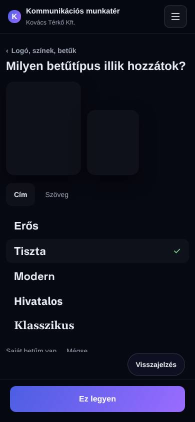
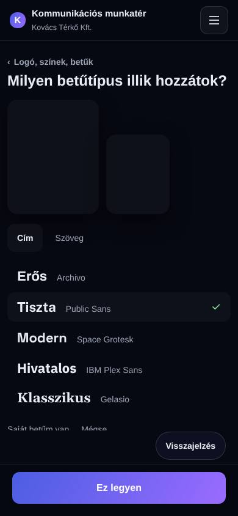
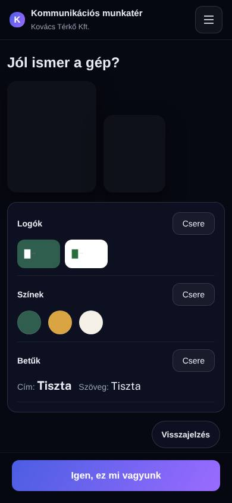
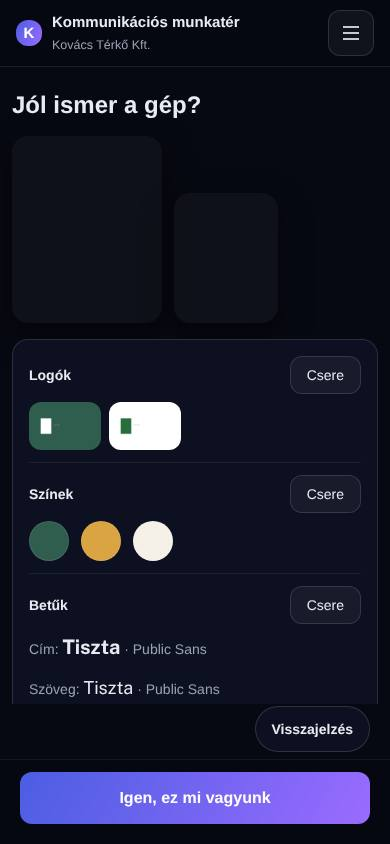
Új munkatér, „Logók kiválasztása” 390 px-en. Előtte: a feltöltés 201, de egyik helyen sem jelent meg, az áttekintés „Válassz logót a cégnevedből”. Ok: packages/fajl-core/src/logo.ts:16 (kepreAlkalmasLogo, 2 MB határ, :12) — a telefon fényképe 3–5 MB, az asztali PNG kicsi. Utána: a böngésző feltöltés előtt kicsinyít, a logó a helyén és az áttekintésen.
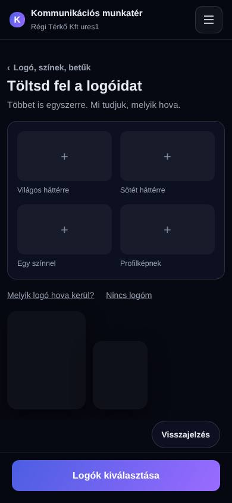
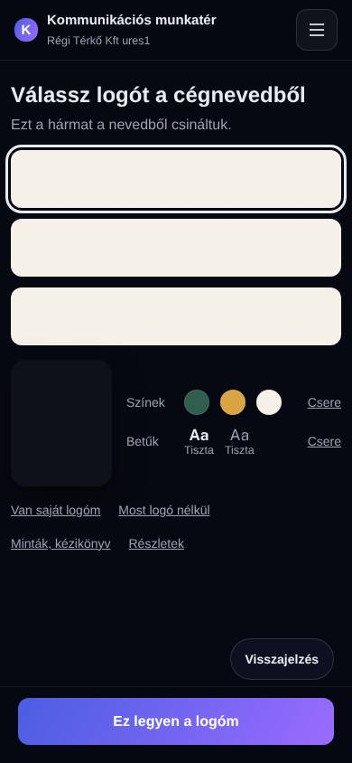
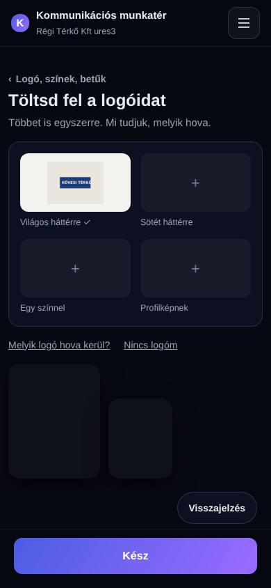
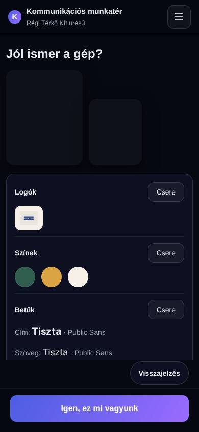
Előtte: a „Kijelentkezés” a 643–681 px-en, a képernyő alatt, és a lap alsó sávja eltakarta (a menü nem görgetett). Utána: a menü a lap fölött, görget, a Nyelv · Kijelentkezés sor mindig látszik (597–635 px).
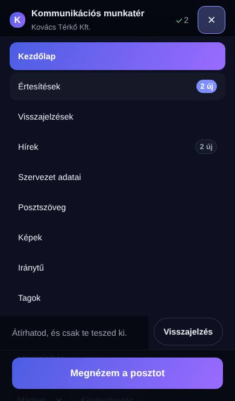
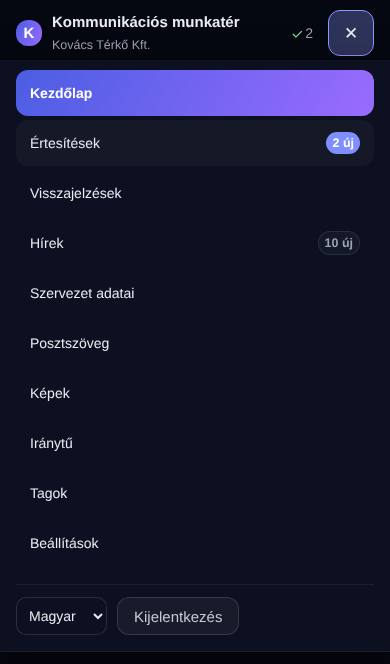
Telefon: 43 szó ✗ → 39 szó (a gép 12 szavas első mondata; telefonon legfeljebb 8 szó + „…”, a teljes szöveg a „Megnézem a posztot” mögött). Asztal változatlan: 50 szó.
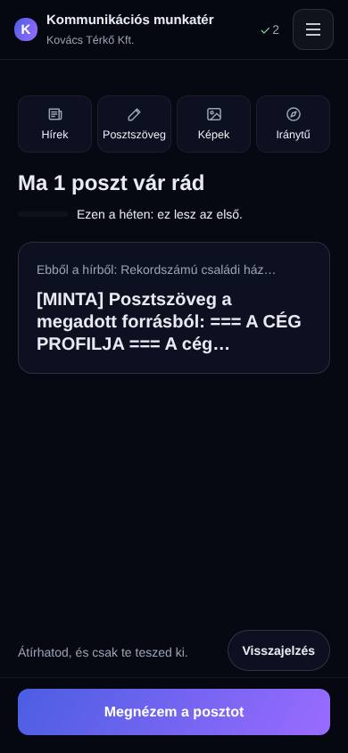
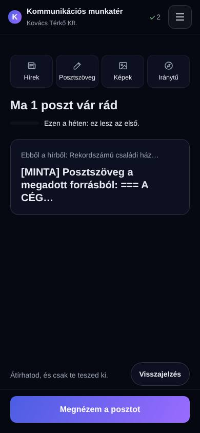
Asztalon 3 kártya + „Még n hír”, telefonon 2 + „Még n hír” (3 + link 41 szó lett volna). Helyben nyílik (mérve: 10 hírnél a nyitás után 10 kártya, a link eltűnik).
| hírek | telefon előtte | telefon utána | asztal előtte | asztal utána |
|---|---|---|---|---|
| 3 | 38 szó | 38 szó | 53 szó | 53 szó |
| 4 | 46 szó ✗ | 35 szó | 63 szó ✗ | 56 szó |
| 6 | 52 szó ✗ | 35 szó | 73 szó ✗ | 56 szó |
| 10 | 52 szó ✗ | 35 szó | 73 szó ✗ | 56 szó |
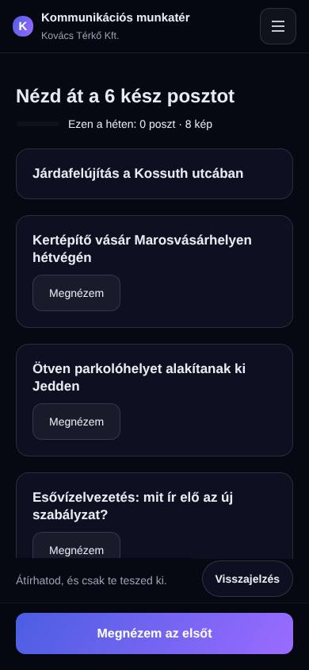
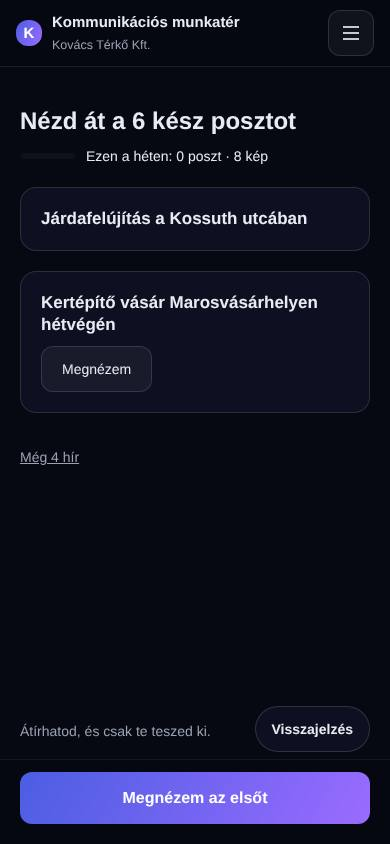
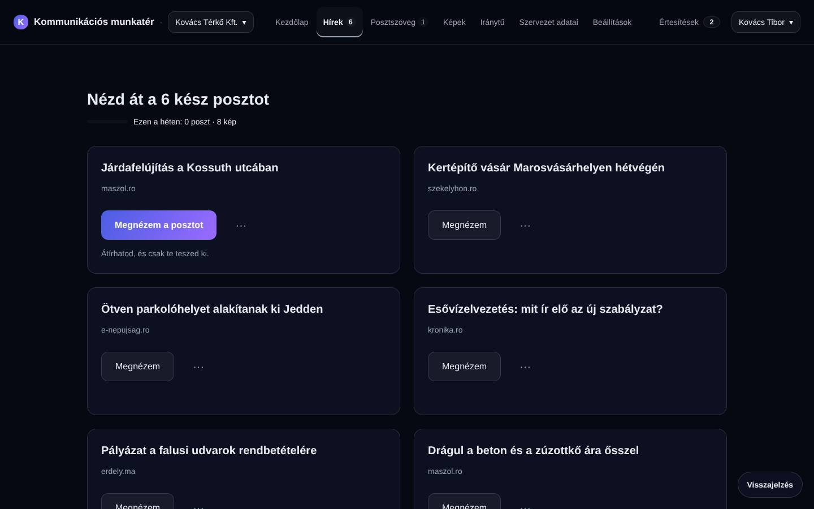
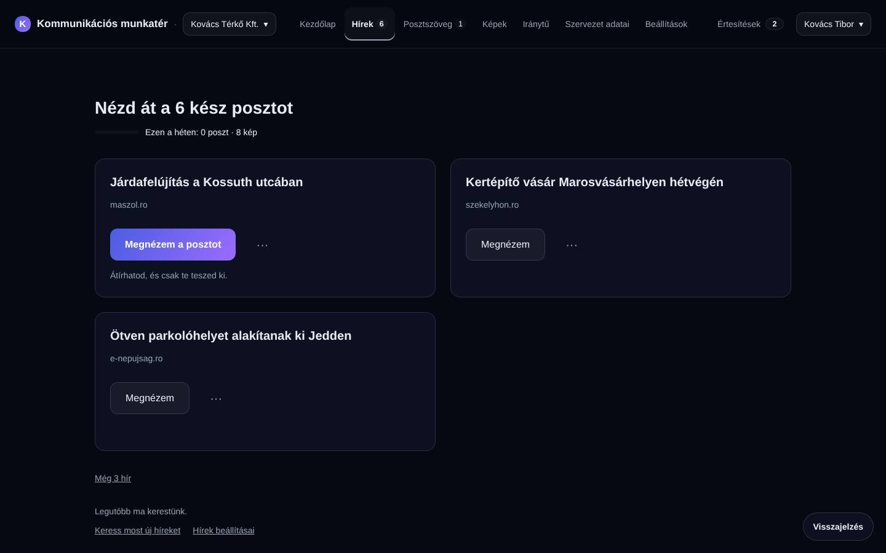